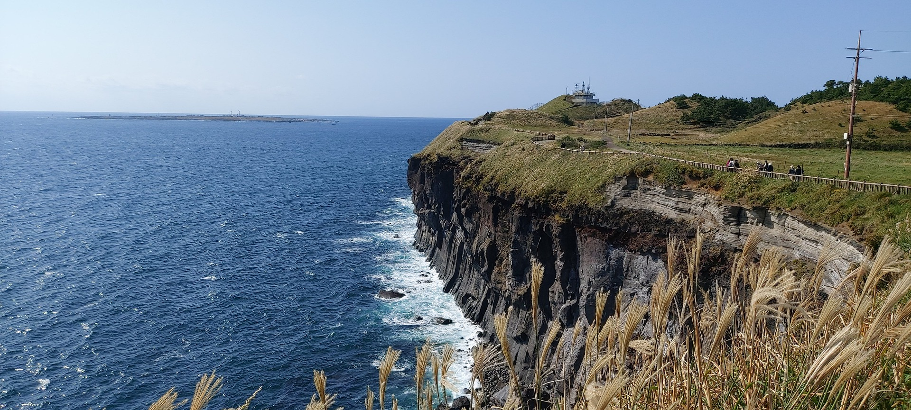

떠나고 싶을 때 떠나 자
떠나 자
Twitter
Facebook
Instagram
제주 올레길

제주 올레길은 총 26개의 코스 길이는 425km 터로 이루어져 있다.
이 모든 코스를 완주하면 제주올레완주증을 주는데 도전하고자 하는 사람들은 도전을 해봐도 좋다.
제주 올레길을 완주하는 것도 좋지만, 자신이 구경하고 싶은 곳을 정해서 걷는 것도 굿.
Menu
메인 홈
경치좋은 여행지
제주도 - 섬지코지
춘천 - 남이섬
가장 아름다운 성당
걷기좋은 여행지
강원도 - 원대리 자작나무숲
가평 - 축령산 잣향기푸른숲
제주 올레길